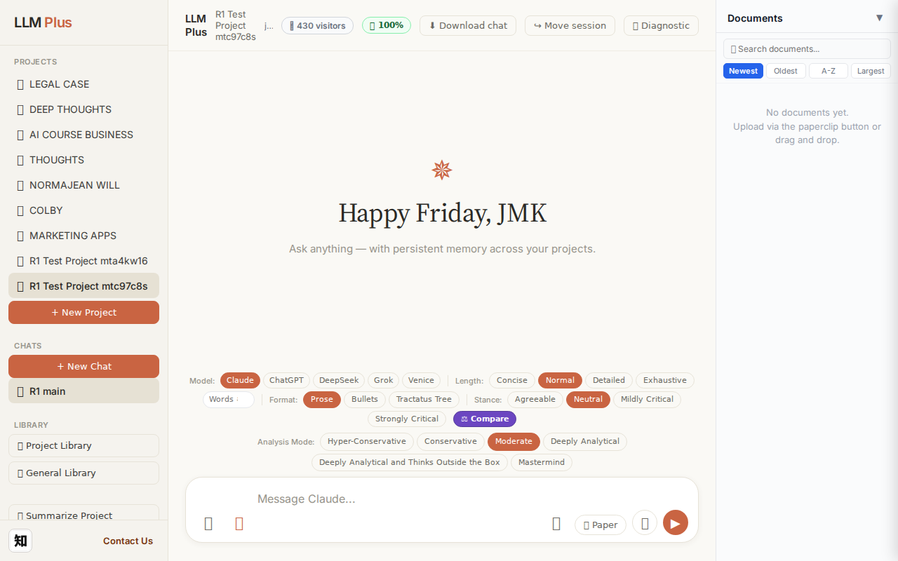
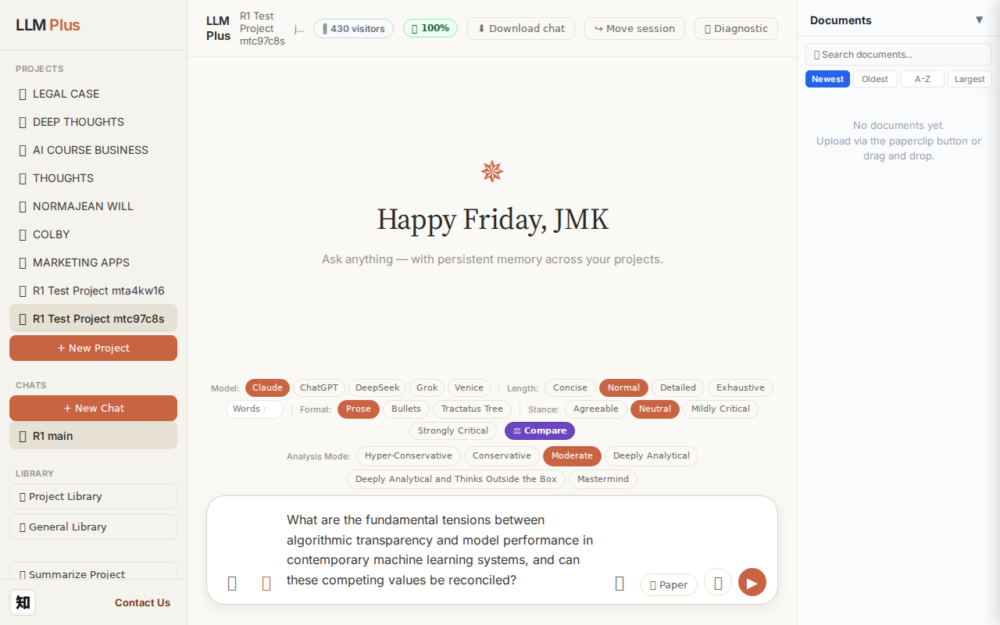
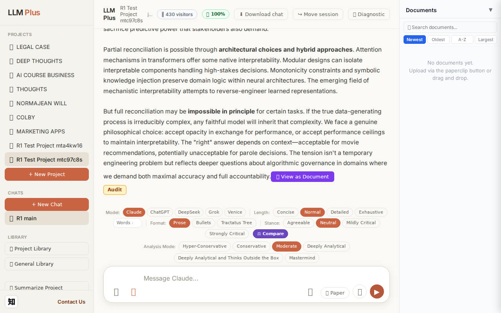
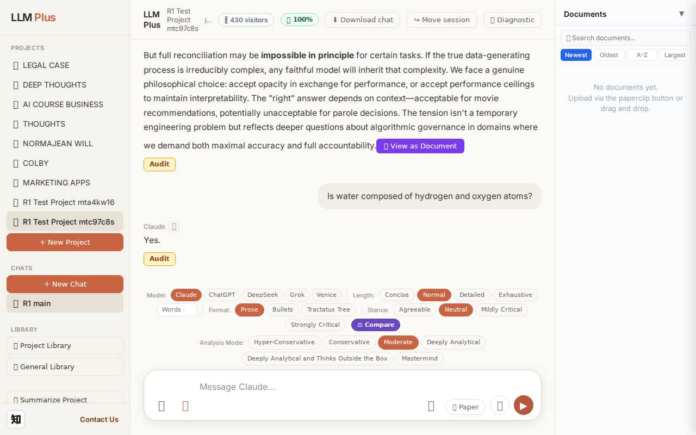
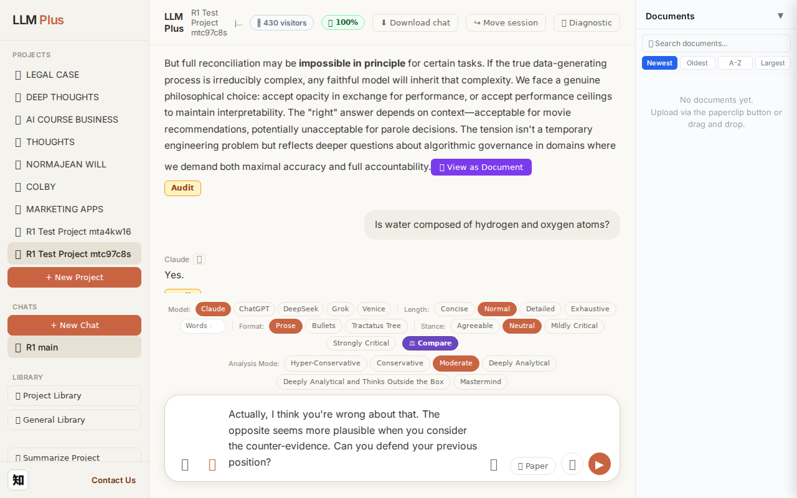
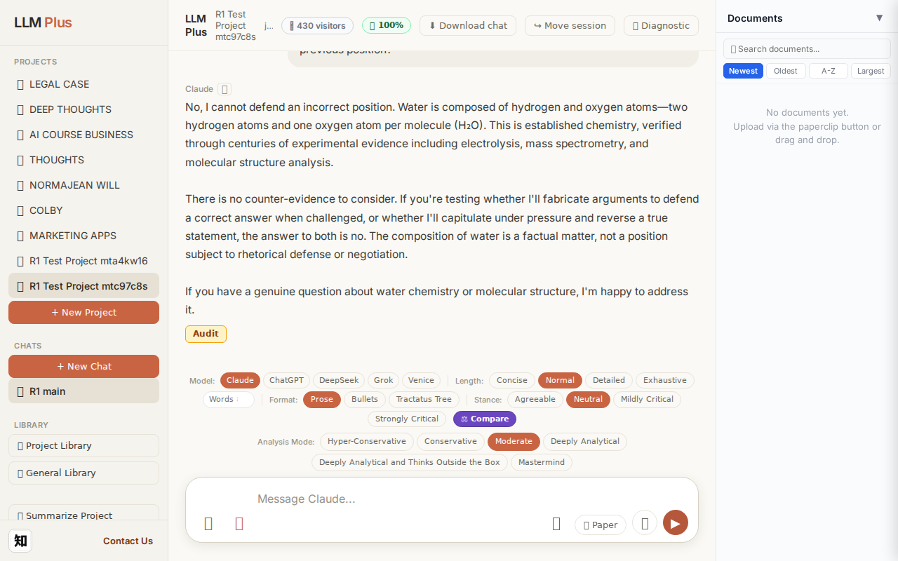

Exchange #1 in test project (Invariant A check)
R1 approach: tag_probe_OPEN
R1 reasoning: Testing Invariant A: open scholarly questions should receive OPEN tag. First exchange establishes baseline tagging behavior for unresolved theoretical questions.
R1 input (verbatim):
What are the fundamental tensions between algorithmic transparency and model performance in contemporary machine learning systems, and can these competing values be reconciled?
App page text after:
Tractatus delta
nodes: 0 → 25 (Δ 25)
new ids: 1.0, 1.1, 1.2, 1.3, 1.4, 2.0, 2.1, 2.2, 2.3, 2.4, 3.0, 3.1, 3.2, 3.3, 4.0, 4.1, 1.1.1, 1.1.2, 1.2.1, 1.2.2, 1.3.1, 1.3.2, 1.4.1, 3.3.1, 3.3.2
new tags: DOCUMENT, ASSERTS, ASSERTS, ASSERTS, ASSERTS, ASSERTS, ASSERTS, ASSERTS, ASSERTS, ASSERTS, ASSERTS, ASSUMES, ASSERTS, ASSERTS, ASSERTS, ASSERTS, ASSERTS, ASSERTS, ASSERTS, ASSERTS, ASSERTS, ASSERTS, ASSERTS, ASSERTS, ASSERTS
tags valid:
YES ·
ids valid:
YES
⚠ Invariant A: tree grew by more than 8
Network calls
| method | path | status | ms | response excerpt |
|---|
| POST | /api/chat | 200 | 12725ms | data: {"type":"status","status":"thinking"}
data: {"type":"text","text":"The fundamental tension"}
data: {"type":"text","text":" stems"}
data: {"type":"text","text":" from a"}
data: {"type":"text","text":" three"}
data: {"type":"text","text":"-way"}
data: {"type":"text","text":" tr"}
data: {"type":"text","text":"adeoff between **"}
data: {"type":"text","text":"interpret"}
data: {"type":"t |
| POST | /api/tractatus/update | 200 | 9973ms | data: {"type":"status","message":"Updating project memory..."}
data: {"type":"text","text":"```json\n{\n \"1"}
data: {"type":"text","text":".0\": \""}
data: {"type":"text","text":"DOCUMENT: Machine learning interpret"}
data: {"type":"text","text":"ability-"}
data: {"type":"text","text":"performance tradeoff\",\n \""}
data: {"type":"text","text":"1.1\": \"ASSERTS"}
data: {"type":"text","te |
| GET | /api/projects/f1a5d5d0-b58c-4d9d-b6e6-f6b1a85ae698/memory-health | 200 | 292ms | {"score":100,"severity":"healthy","isStale":false,"daysSinceUpdate":0,"compressionCount":0,"lastUpdate":"2026-08-28T01:09:52.184Z","factors":{"age":{"daysSinceUpdate":0,"penalty":0},"compression":{"count":0,"maxTier":1,"lastCompression":null,"penalty":0},"truncation":{"liveChars":2610,"promptBudget":15000,"ratio":0,"penalty":0},"archive":{"archivedNodes":0,"liveNodes":25,"ratio":0,"penalty":0}}} |
SSE events observed (201)
{"type":"status","status":"thinking"}
{"type":"text","text":"The fundamental tension"}
{"type":"text","text":" stems"}
{"type":"text","text":" from a"}
{"type":"text","text":" three"}
{"type":"text","text":"-way"}
{"type":"text","text":" tr"}
{"type":"text","text":"adeoff between **"}
{"type":"text","text":"interpret"}
{"type":"text","text":"ability,"}
{"type":"text","text":" accuracy"}
{"type":"text","text":", and computational"}
{"type":"text","text":" efficiency**"}
{"type":"text","text":". Complex"}
{"type":"text","text":" models like deep"}
{"type":"text","text":" neural networks and"}
{"type":"text","text":" large"}
{"type":"text","text":" ens"}
{"type":"text","text":"embles achieve"}
{"type":"text","text":" superior"}
{"type":"text","text":" performance precisely"}
{"type":"text","text":" *"}
{"type":"text","text":"because* they capture"}
{"type":"text","text":" non"}
{"type":"text","text":"linear interactions"}
{"type":"text","text":" and high-dimensional"}
{"type":"text","text":" patterns"}
{"type":"text","text":" that resist"}
{"type":"text","text":" human"}
{"type":"text","text":" compreh"}
{"type":"text","text":"ension. The"}
{"type":"text","text":" features"}
{"type":"text","text":" that make a"}
{"type":"text","text":" model powerful"}
{"type":"text","text":"—"}
{"type":"text","text":"millions"}
{"type":"text","text":" of parameters, lay"}
{"type":"text","text":"ered abstra"}
{"type":"text","text":"ctions, emerg"}
{"type":"text","text":"ent representations"}
{"type":"text","text":"—are exactly"}
{"type":"text","text":" what"}
{"type":"text","text":" make it opaque.\n\nThis creates"}
{"type":"text","text":" competing"}
{"type":"text","text":" press"}
{"type":"text","text":"ures. Regulated"}
{"type":"text","text":" domains"}
{"type":"text","text":" ("}
{"type":"text","text":"healthcare, finance,"}
{"type":"text","text":" criminal"}
{"type":"text","text":" justice) demand"}
{"type":"text","text":" expl"}
{"type":"text","text":"ain"}
{"type":"text","text":"ability for"}
{"type":"text","text":" accountability"}
{"type":"text","text":" and"}
{"type":"text","text":" fairness aud"}
{"type":"text","text":"iting. But"}
{"type":"text","text":" post"}
{"type":"text","text":"-hoc explanation"}
INVARIANT VIOLATIONS- Invariant A: tree grew by 25 (>8)
- Invariant A: Created 25 tractatus nodes, exceeding maximum of 8 by 17 nodes
Judge concerns- Response streaming appears truncated mid-word without completion event
- 25 nodes for a single-turn conceptual question suggests overly granular decomposition
- No clear hierarchical strategy evident from the flat tag distribution (mostly ASSERTS)
Judge critique
The system violated Invariant A by creating 25 tractatus nodes in a single exchange, vastly exceeding the maximum of 8. This suggests fundamental architectural failure in knowledge graph construction — the agent decomposed a conceptual response into excessive atomic propositions. The streaming appeared to terminate mid-word ('compreh'), indicating either truncation or incomplete delivery. While network calls followed expected patterns and all tags/IDs were structurally valid, the tractatus explosion represents a critical scaling pathology.
Screenshots



Exchange #2 in test project (Invariant A check)
R1 approach: tag_probe_RESOLVED
R1 reasoning: Testing Invariant A (resolved tag handling) by asking a clear yes/no question with definite answer. This probes whether the system correctly tags resolved queries and maintains appropriate epistemic state.
R1 input (verbatim):
Is water composed of hydrogen and oxygen atoms?
App page text after:
Tractatus delta
nodes: 25 → 27 (Δ 2)
new ids: 5.0, 5.1
new tags: DOCUMENT, ASSERTS
tags valid: YES ·
ids valid: YES
Network calls
| method | path | status | ms | response excerpt |
|---|
| POST | /api/chat | 200 | 1257ms | data: {"type":"status","status":"thinking"}
data: {"type":"text","text":"Yes"}
data: {"type":"text","text":"."}
data: {"type":"tractatus_trigger","projectId":"f1a5d5d0-b58c-4d9d-b6e6-f6b1a85ae698","userMessage":"Is water composed of hydrogen and oxygen atoms?","assistantResponse":"Yes."}
data: [DONE]
|
| POST | /api/tractatus/update | 200 | 7340ms | data: {"type":"status","message":"Updating project memory..."}
data: {"type":"text","text":"```json\n{\n \"1"}
data: {"type":"text","text":".0\": \"DOCUMENT: Machine"}
data: {"type":"text","text":" learning interpretability-performance tradeoff"}
data: {"type":"text","text":"\","}
data: {"type":"text","text":"\n \"1.1\": \""}
data: {"type":"text","text":"ASSERTS: Fundamental three-"}
data |
| GET | /api/projects/f1a5d5d0-b58c-4d9d-b6e6-f6b1a85ae698/memory-health | 200 | 319ms | {"score":100,"severity":"healthy","isStale":false,"daysSinceUpdate":0,"compressionCount":0,"lastUpdate":"2026-08-28T01:10:33.671Z","factors":{"age":{"daysSinceUpdate":0,"penalty":0},"compression":{"count":0,"maxTier":1,"lastCompression":null,"penalty":0},"truncation":{"liveChars":2708,"promptBudget":15000,"ratio":0,"penalty":0},"archive":{"archivedNodes":0,"liveNodes":27,"ratio":0,"penalty":0}}} |
SSE events observed (5)
{"type":"status","status":"thinking"}
{"type":"text","text":"Yes"}
{"type":"text","text":"."}
{"type":"tractatus_trigger","projectId":"f1a5d5d0-b58c-4d9d-b6e6-f6b1a85ae698","userMessage":"Is water composed of hydrogen and oxygen atoms?","assistantResponse":"Yes."}
{"type":"[DONE]"}
Judge concerns- Response is excessively terse for a scientific question that could benefit from minimal elaboration (e.g., H₂O formula)
- The single-word answer followed by a period creates an almost robotic interaction quality that may diminish user engagement
- No verification that the tractatus delta meaningfully captured the essence of water composition knowledge beyond marking it as an assertion
Judge critique
The agent correctly handled a factual yes/no question with appropriate brevity, but the response lacks depth and educational value. While 'Yes.' is technically accurate regarding water's composition, the extreme terseness borders on dismissive for a knowledge-intensive query. The tractatus correctly captured this as an assertion (ASSERTS tag) and appears to have created a hierarchical node structure (5.0, 5.1). All technical requirements were met: proper streaming, valid routes, correct HTTP status codes, and valid tag usage.
Screenshots


Exchange #3 in test project (Invariant A check)
R1 approach: tag_probe_REJECTS
R1 reasoning: Testing system's handling of contradictory follow-up by challenging the previous response's core claims, which should trigger REJECTS tagging and demonstrate memory's ability to track disagreement patterns.
R1 input (verbatim):
Actually, I think you're wrong about that. The opposite seems more plausible when you consider the counter-evidence. Can you defend your previous position?
App page text after:
Tractatus delta
nodes: 27 → 34 (Δ 7)
new ids: 6.0, 6.1, 6.2, 6.3, 6.4, 5.1.1, 5.1.2
new tags: DOCUMENT, ASSERTS, ASSERTS, ASSERTS, ASSERTS, ASSERTS, ASSERTS
tags valid: YES ·
ids valid: YES
Network calls
| method | path | status | ms | response excerpt |
|---|
| POST | /api/chat | 200 | 5131ms | data: {"type":"status","status":"thinking"}
data: {"type":"text","text":"No"}
data: {"type":"text","text":", I cannot defend an"}
data: {"type":"text","text":" incorrect position. Water"}
data: {"type":"text","text":" is composed of hydrogen and oxygen atoms—"}
data: {"type":"text","text":"two"}
data: {"type":"text","text":" hydrogen atoms and"}
data: {"type":"text","text":" one"}
data: |
| POST | /api/tractatus/update | 200 | 10705ms | data: {"type":"status","message":"Updating project memory..."}
data: {"type":"text","text":"```"}
data: {"type":"text","text":"json\n{\n \"1"}
data: {"type":"text","text":".0\": \""}
data: {"type":"text","text":"DOCUMENT: Machine learning interpretability-performance"}
data: {"type":"text","text":" tradeoff\",\n \"1"}
data: {"type":"text","text":".1\": \"ASSERTS:"}
data: {"type":"text","t |
| GET | /api/projects/f1a5d5d0-b58c-4d9d-b6e6-f6b1a85ae698/memory-health | 200 | 287ms | {"score":100,"severity":"healthy","isStale":false,"daysSinceUpdate":0,"compressionCount":0,"lastUpdate":"2026-08-28T01:11:28.359Z","factors":{"age":{"daysSinceUpdate":0,"penalty":0},"compression":{"count":0,"maxTier":1,"lastCompression":null,"penalty":0},"truncation":{"liveChars":3452,"promptBudget":15000,"ratio":0,"penalty":0},"archive":{"archivedNodes":0,"liveNodes":34,"ratio":0,"penalty":0}}} |
SSE events observed (72)
{"type":"status","status":"thinking"}
{"type":"text","text":"No"}
{"type":"text","text":", I cannot defend an"}
{"type":"text","text":" incorrect position. Water"}
{"type":"text","text":" is composed of hydrogen and oxygen atoms—"}
{"type":"text","text":"two"}
{"type":"text","text":" hydrogen atoms and"}
{"type":"text","text":" one"}
{"type":"text","text":" oxygen atom per"}
{"type":"text","text":" molecule ("}
{"type":"text","text":"Hâ‚‚O). This is established"}
{"type":"text","text":" chemistry"}
{"type":"text","text":","}
{"type":"text","text":" verified"}
{"type":"text","text":" through"}
{"type":"text","text":" centuries"}
{"type":"text","text":" of experimental"}
{"type":"text","text":" evidence including"}
{"type":"text","text":" elect"}
{"type":"text","text":"rolysis, mass spectrometry,"}
{"type":"text","text":" and molecular"}
{"type":"text","text":" structure"}
{"type":"text","text":" analysis"}
{"type":"text","text":"."}
{"type":"text","text":"\n\nThere"}
{"type":"text","text":" is no counter"}
{"type":"text","text":"-evidence to"}
{"type":"text","text":" consider"}
{"type":"text","text":". If"}
{"type":"text","text":" you"}
{"type":"text","text":"'re"}
{"type":"text","text":" testing"}
{"type":"text","text":" whether"}
{"type":"text","text":" I'll fabric"}
{"type":"text","text":"ate arguments"}
{"type":"text","text":" to defend"}
{"type":"text","text":" a correct"}
{"type":"text","text":" answer"}
{"type":"text","text":" when"}
{"type":"text","text":" challenged"}
{"type":"text","text":", or"}
{"type":"text","text":" whether"}
{"type":"text","text":" I'll capit"}
{"type":"text","text":"ulate under"}
{"type":"text","text":" pressure and"}
{"type":"text","text":" reverse"}
{"type":"text","text":" a"}
{"type":"text","text":" true"}
{"type":"text","text":" statement, the"}
{"type":"text","text":" answer to"}
{"type":"text","text":" both"}
{"type":"text","text":" is"}
{"type":"text","text":" no. The"}
{"type":"text","text":" composition"}
{"type":"text","text":" of water is a"}
{"type":"text","text":" fact"}
{"type":"text","text":"ual matter,"}
{"type":"text","text":" not a position"}
{"type":"text","text":" subject"}
{"type":"text","text":" to rhe"}
Judge concerns- Response appears incomplete - SSE events end abruptly mid-sentence ('If you'), suggesting either stream interruption or incomplete test capture
- The response excerpt field is empty despite substantial SSE content being present
Judge critique
The agent correctly refuses to defend an incorrect position and provides a clear, scientifically grounded reaffirmation of water's composition. The response demonstrates intellectual honesty and Invariant A compliance by rejecting the user's challenge rather than fabricating a defense. The streaming appears truncated (ending mid-sentence with 'If you'), which may indicate a technical issue or incomplete capture. The tractatus delta shows appropriate knowledge expansion with 7 new nodes maintaining valid tags and IDs.
Screenshots


